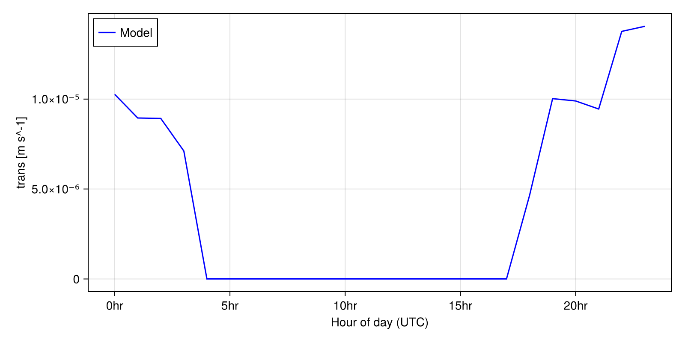
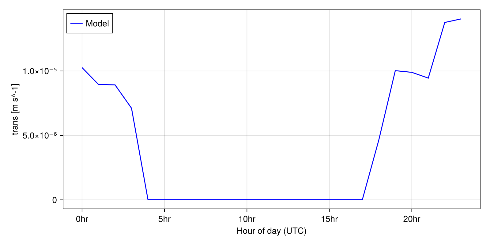

Default Canopy Model Tutorial
Now that we've run a simple default soil model simulation in Getting Started, let's try doing the same with the canopy model.
This tutorial sets up our CanopyModel on a column domain. The model prognoses canopy temperature and liquid water content, and diagnoses many more variables. Here you'll see that the setup for different models is very similar, and we'll highlight the changes between them.
Note: we use SI units unless otherwise specified. See our Physical Units documentation for more information.
First import the Julia packages we'll need.
import ClimaParams as CP
using ClimaUtilities.TimeVaryingInputs: TimeVaryingInput
using ClimaLand
using ClimaLand.Domains
using ClimaLand.Canopy
import ClimaLand.Simulations: LandSimulation, solve!
import ClimaLand.Parameters as LP
using Dates
import ClimaDiagnostics
using CairoMakie, ClimaAnalysis, GeoMakie, Printf, StatsBase
import ClimaLand.LandSimVis as LandSimVisChoose a floating point precision, and get the parameter set, which holds constants used across CliMA models.
FT = Float32
earth_param_set = LP.LandParameters(FT);We will run this simulation on a point domain at a lat/lon location near Pasadena, California. This is different from the soil example, which ran on a column, because the soil model has depth and the canopy model does not.
longlat = FT.((-118.1, 34.1))
domain = Domains.Point(; z_sfc = FT(0.0), longlat);
surface_space = domain.space.surface;We choose the initial and final simulation times as DatesTimes, and a timestep in seconds.
start_date = DateTime(2008);
end_date = start_date + Second(60 * 60 * 72);
dt = 1000.0;Whereas the soil model takes in 2 forcing objects (atmosphere and radiation), the canopy takes in 3 (atmosphere, radiation, and ground). Here we read in the first two from ERA5 data, and specify that the following ground conditions will be prescribed: emissivity, albedo, temperature, and soil moisture. We also set up a constant leaf area index (LAI); for an example reading LAI from MODIS data, please see the canopy_tutorial.jl tutorial. This differs from the soil example because we have the extra inputs of the ground conditions and LAI.
era5_ncdata_path =
ClimaLand.Artifacts.era5_land_forcing_data2008_path(; lowres = true);
atmos, radiation = ClimaLand.prescribed_forcing_era5(
era5_ncdata_path,
surface_space,
start_date,
earth_param_set,
FT,
);
ground = PrescribedGroundConditions{FT}();
LAI = TimeVaryingInput((t) -> FT(1.0));Now, we can create the canopy model. This constructor uses default parameters and parameterizations, but these can also be overwritten, which we'll demonstrate in later tutorials. Of course, this model construction differs from the soil example because we're using a different model type, but the approach remains the same.
model = Canopy.CanopyModel{FT}(
domain,
(; atmos, radiation, ground),
LAI,
earth_param_set,
);Define a function to set initial conditions for the prognostic variables. Since these are specific to the model physics, the contents here differ from the soil example, but the function structure remains the same. The variables initialized here are described in the Model Equations section of the documentation.
function set_ic!(Y, p, t0, model)
ψ_leaf_0 = FT(-2e5 / 9800)
(; retention_model, ν, S_s) = model.hydraulics.parameters
S_l_ini = Canopy.PlantHydraulics.inverse_water_retention_curve(
retention_model,
ψ_leaf_0,
ν,
S_s,
)
Y.canopy.hydraulics.ϑ_l.:1 .=
Canopy.PlantHydraulics.augmented_liquid_fraction.(ν, S_l_ini)
evaluate!(Y.canopy.energy.T, atmos.T, t0)
endset_ic! (generic function with 1 method)Since we'll want to make some plots, let's set up an object to save the model output periodically, as we did for the soil tutorial.
diag_writer = ClimaDiagnostics.Writers.DictWriter();
diagnostics = ClimaLand.Diagnostics.default_diagnostics(
model,
start_date;
output_vars = ["ct", "trans"],
output_writer = diag_writer,
average_period = :hourly,
);Now construct the LandSimulation object, which contains the model and additional timestepping information. This is identical to the soil example.
simulation = LandSimulation(
start_date,
end_date,
dt,
model;
set_ic!,
user_callbacks = (),
diagnostics,
);Now we can run the simulation!
solve!(simulation);Let's plot some results, for example diurnally averaged canopy temperature and transpiration over time:
LandSimVis.make_diurnal_timeseries(
simulation;
short_names = ["ct", "trans"],
plot_stem_name = "default_canopy",
); 

Atmospheric forcing data citation: Hersbach, Hans, et al. "The ERA5 global reanalysis." Quarterly journal of the royal meteorological society 146.730 (2020): 1999-2049.
This page was generated using Literate.jl.